Demo illustrating (Center-Symetric) MultiBlock Local Binary Pattern (mblbp)
(Center-Symetric) MultiBlock Local Binary Pattern
Usage
------
z = mblbp(I , [F] , [map] , [options]);
Inputs
-------
I Image pattern (Ny x Nx x N) in UINT8 format (unsigned char)
F Features lists (5 x nF) int UINT32 (default full mblbp features of size(ny x nx), see mblbp_featlist function)
map Feature's mapping vector in UINT8 format (unsigned char) (default map = 0:255)
options
cs_opt Center-Symetric option : 1 for computing CS-MBLBP features, 0 : for MBLBP (default cs_opt = 0)
a Tolerance (default a = 0) Outputs
-------
z MultiBlock LPB vector (nF x P) for each positions (y,x) in [1+h,...,ny-h]x[1+w,...,nx-w] and (w,h) integral block size.
Contents
First example : compute MBLBP and CS-MBLBP Features on image I for a scale = 5
clear, close all
I = imread('0000_-12_0_0_15_0_1.pgm');
[Ny , Nx] = size(I);
N = 8;
scale = 5*[1 ; 1 ];
options.cs_opt = 1;
map1 = uint8(0:2^N-1);
map2 = uint8(0:2^N/2-1);
F = mblbp_featlist(Ny , Nx , scale);
z1 = mblbp(I , F , map1);
z2 = mblbp(I , F , map2 , options);
template = F(: , 1);
Nxx = (Nx-3*template(4) + 1);
Nyy = (Ny-3*template(5) + 1);
Imblbp1 = reshape(z1 , Nyy , Nxx);
Imblbp2 = reshape(z2 , Nyy , Nxx);
figure
subplot(131)
imagesc(I);
title('Original Image');
axis square
subplot(132)
imagesc(imresize(Imblbp1 , [Ny , Nx]))
title(sprintf('MBLBP with s = %d' , scale(1)));
axis square
subplot(133)
imagesc(imresize(Imblbp2 , [Ny , Nx]))
title(sprintf('CSMBLBP with s = %d' , scale(1)));
axis square
colormap(gray)
disp('Press key to continue')
pause
Warning: Calling MEX-file 'C:\utilisateurs\SeBy\matlab\fdtool\mblbp_featlist.dll'.
MEX-files with .dll extensions will not execute in a future version of MATLAB.
Warning: Calling MEX-file 'C:\utilisateurs\SeBy\matlab\fdtool\mblbp.dll'.
MEX-files with .dll extensions will not execute in a future version of MATLAB.
Press key to continue
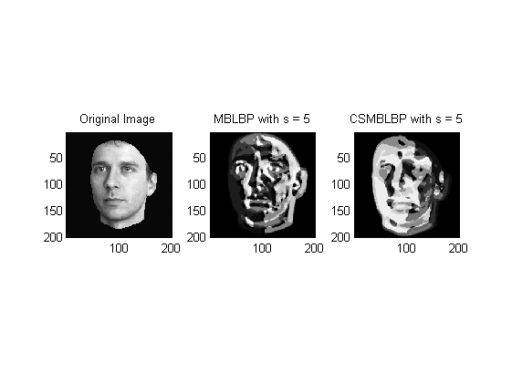
Second example : compute MBLBP and CS-MBLBP Features on image I for scale = {1,2}
Ny = 24;
Nx = 24;
N = 8;
Nimage = 200;
scale = [1 , 2 ; 1 , 2];
options.cs_opt = 1;
load viola_24x24
F = mblbp_featlist(Ny , Nx , scale);
map1 = uint8(0:2^N-1);
map2 = uint8(0:2^N/2-1);
I = X(: , : , Nimage);
z1 = mblbp(I , F , map1 );
z2 = mblbp(I , F , map2 , options );
ind1 = find(F(1 , :) == 1);
template1 = F(: , ind1(1));
Nxx1 = (Nx-3*template1(4) + 1);
Nyy1 = (Ny-3*template1(5) + 1);
Imblbp10 = reshape(z1(ind1) , Nyy1 , Nxx1);
Imblbp11 = reshape(z2(ind1) , Nyy1 , Nxx1);
ind2 = find(F(1 , :) == 2);
template2 = F(: , ind2(1));
Nxx2 = (Nx-3*template2(4) + 1);
Nyy2 = (Ny-3*template2(5) + 1);
Imblbp20 = reshape(z1(ind2) , Nyy2 , Nxx2);
Imblbp21 = reshape(z2(ind2) , Nyy2 , Nxx2);
figure
subplot(231)
imagesc(I);
title('Original Image');
colorbar
axis square
subplot(232)
imagesc(imresize(Imblbp10 , [Ny , Nx]))
title(sprintf('MBLBP with s = %d' , scale(1,1)));
colorbar
axis square
subplot(233)
imagesc(imresize(Imblbp20 , [Ny , Nx]))
title(sprintf('MBLBP with s = %d' , scale(1,2)));
colorbar
axis square
subplot(234)
imagesc(I);
title('Original Image');
colorbar
axis square
subplot(235)
imagesc(imresize(Imblbp11 , [Ny , Nx]))
title(sprintf('CSMBLBP with s = %d' , scale(1,1)));
colorbar
axis square
subplot(236)
imagesc(imresize(Imblbp21 , [Ny , Nx]))
title(sprintf('CSMBLBP with s = %d' , scale(1,2)));
colorbar
axis square
colormap(gray)
disp('Press key to continue')
pause
Press key to continue
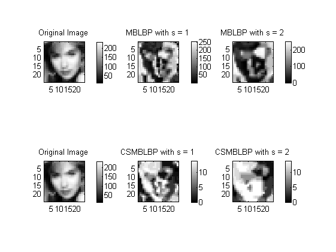
Third example : Display best MBLBP Features from Gentleboosting & Adaboosting
load viola_24x24
y = int8(y);
indp = find(y == 1);
indn = find(y ==-1);
Ny = 24;
Nx = 24;
N = 8;
Nimage = 110;
nb_feats = 3;
F = mblbp_featlist(Ny , Nx);
mapping = getmapping(N,'u2');
map = uint8(mapping.table);
map = uint8(0:255);
H = mblbp(X , F , map);
figure
imagesc(H)
title('MBLBP Features')
drawnow
index = randperm(length(y));
tic,model1 = mblbp_gentleboost_binary_model_cascade(H(: , index) , y(index) , nb_feats);,toc
tic,model2 = mblbp_adaboost_binary_model_cascade(H(: , index) , y(index) , nb_feats);,toc
[yest1 , fx1] = mblbp_gentleboost_binary_predict_cascade(H , model1);
[yest2 , fx2] = mblbp_gentleboost_binary_predict_cascade(H , model2);
figure
best_feats = double(F(: , model1(1 , 1:nb_feats)));
I = X(: , : , Nimage);
imagesc(I)
hold on
for i = 1:nb_feats
h = rectangle('Position', [best_feats(2,i)-best_feats(4,i) + 0.5, best_feats(3,i)-best_feats(5,i) + 0.5 , 3*best_feats(4,i) , 3*best_feats(5,i)]);
set(h , 'linewidth' , 2 , 'EdgeColor' , [1 0 0])
end
hold off
title(sprintf('Best %d MBLBP features from Gentleboosting' , nb_feats) , 'fontsize' , 13)
colormap(gray)
figure
best_feats = double(F(: , model2(1 , 1:nb_feats)));
I = X(: , : , Nimage);
imagesc(I)
hold on
for i = 1:nb_feats
h = rectangle('Position', [best_feats(2,i)-best_feats(4,i) + 0.5, best_feats(3,i)-best_feats(5,i) + 0.5 , 3*best_feats(4,i) , 3*best_feats(5,i)]);
set(h , 'linewidth' , 2 , 'EdgeColor' , [1 0 0])
end
hold off
title(sprintf('Best %d MBLBP features from Adaboosting' , nb_feats) , 'fontsize' , 13)
colormap(gray)
disp('Press key to continue')
pause
Warning: Calling MEX-file 'C:\utilisateurs\SeBy\matlab\fdtool\mblbp_gentleboost_binary_model_cascade.dll'.
MEX-files with .dll extensions will not execute in a future version of MATLAB.
Elapsed time is 23.914998 seconds.
Warning: Calling MEX-file 'C:\utilisateurs\SeBy\matlab\fdtool\mblbp_adaboost_binary_model_cascade.dll'.
MEX-files with .dll extensions will not execute in a future version of MATLAB.
Elapsed time is 12.179459 seconds.
Warning: Calling MEX-file 'C:\utilisateurs\SeBy\matlab\fdtool\mblbp_gentleboost_binary_predict_cascade.dll'.
MEX-files with .dll extensions will not execute in a future version of MATLAB.
Press key to continue
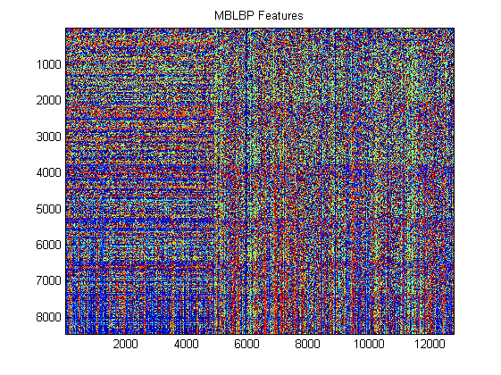 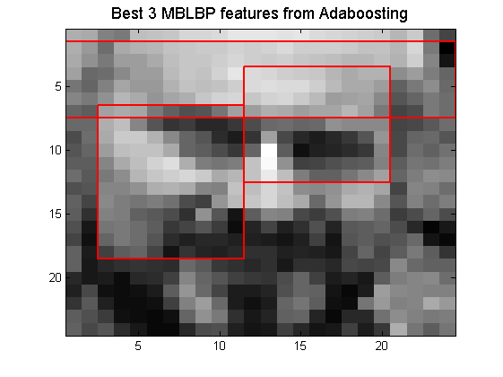
Fourth example : compute MBLBP Features + Adaboosting with T weaklearners (Decision Stump)
load viola_24x24
y = int8(y);
indp = find(y == 1);
indn = find(y ==-1);
Ny = 24;
Nx = 24;
F = mblbp_featlist(Ny , Nx);
map = uint8(0:255);
T = 50;
H = mblbp(X , F , map);
figure
imagesc(H)
title('MBLBP Features')
drawnow
index = randperm(length(y));
model = mblbp_adaboost_binary_model_cascade(H(: , index) , y(index) , T);
[yest_train , fx_train] = mblbp_adaboost_binary_predict_cascade(H , model);
tp_train = sum(yest_train(indp) == y(indp))/length(indp)
fp_train = 1 - sum(yest_train(indn) == y(indn))/length(indn)
Perf_train = sum(yest_train == y)/length(y)
[dum , ind] = sort(y , 'descend');
figure
plot(fx_train(ind))
title(sprintf('Output of the strong classifier for train data with T = %d' , T))
[tpp_train , fpp_train] = basicroc(y , fx_train);
load jensen_24x24
y = int8(y);
indp = find(y == 1);
indn = find(y ==-1);
H = mblbp(X , F , map);
[yest_test , fx_test] = mblbp_adaboost_binary_predict_cascade(H , model);
tp_test = sum(yest_test(indp) == y(indp))/length(indp)
fp_test = 1 - sum(yest_test(indn) == y(indn))/length(indn)
Perf_test = sum(yest_test == y)/length(y)
[dum , ind] = sort(y , 'descend');
figure
plot(fx_test(ind))
title(sprintf('Output of the strong classifier for test data with T = %d' , T))
[tpp_test , fpp_test] = basicroc(y , fx_test);
figure
plot(fpp_train , tpp_train , fpp_test , tpp_test , 'r' , 'linewidth' , 2)
axis([-0.02 , 1.02 , -0.02 , 1.02])
title(sprintf('ROC for MBLBP features with T = %d' , T))
legend('Train' , 'Test' , 'Location' , 'SouthEast')
disp('Press key to continue')
pause
Warning: Calling MEX-file 'C:\utilisateurs\SeBy\matlab\fdtool\mblbp_adaboost_binary_predict_cascade.dll'.
MEX-files with .dll extensions will not execute in a future version of MATLAB.
tp_train =
0.9420
fp_train =
0.0302
Perf_train =
0.9591
tp_test =
0.9752
fp_test =
0.0310
Perf_test =
0.9701
Press key to continue
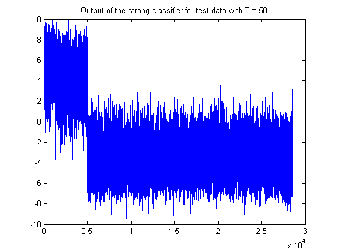 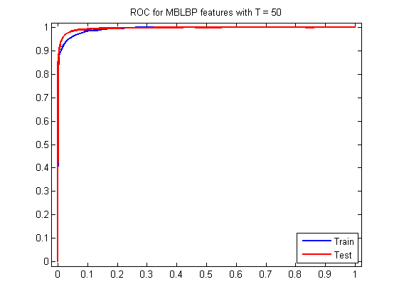 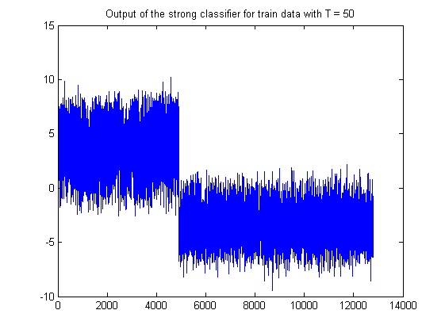
Fifth example : Adaboosting versus Gentleboosting with MLBP
load viola_24x24
y = int8(y);
indp = find(y == 1);
indn = find(y ==-1);
Ny = 24;
Nx = 24;
N = 8;
R = 1;
F = mblbp_featlist(Ny , Nx);
map = uint8(0:255);
T = 50;
H = mblbp(X , F , map);
figure
imagesc(H)
title('MBLBP Features')
drawnow
index = randperm(length(y));
tic,model0 = mblbp_gentleboost_binary_model_cascade(H(: , index) , y(index) , T);,toc
[yest0_train , fx0_train] = mblbp_gentleboost_binary_predict_cascade(H , model0);
tic,model1 = mblbp_adaboost_binary_model_cascade(H(: , index) , y(index) , T);,toc
[yest1_train , fx1_train] = mblbp_adaboost_binary_predict_cascade(H , model1);
tp0_train = sum(yest0_train(indp) == y(indp))/length(indp)
fp0_train = 1 - sum(yest0_train(indn) == y(indn))/length(indn)
Perf0_train = sum(yest0_train == y)/length(y)
tp1_train = sum(yest1_train(indp) == y(indp))/length(indp)
fp1_train = 1 - sum(yest1_train(indn) == y(indn))/length(indn)
Perf1_train = sum(yest1_train == y)/length(y)
[dum , ind] = sort(y , 'descend');
figure
plot((1:length(y)) , fx0_train(ind) , (1:length(y)) , fx1_train(ind) , 'r')
title(sprintf('Output of the strong classifier for train data with T = %d' , T))
legend('Gentleboost' , 'Adaboost')
[tpp0_train , fpp0_train] = basicroc(y , fx0_train);
[tpp1_train , fpp1_train] = basicroc(y , fx1_train);
load jensen_24x24
y = int8(y);
indp = find(y == 1);
indn = find(y ==-1);
H = mblbp(X , F , map);
[yest0_test , fx0_test] = mblbp_gentleboost_binary_predict_cascade(H , model0);
[yest1_test , fx1_test] = mblbp_adaboost_binary_predict_cascade(H , model1);
tp0_test = sum(yest0_test(indp) == y(indp))/length(indp)
fp0_test = 1 - sum(yest0_test(indn) == y(indn))/length(indn)
Perf0_test = sum(yest0_test == y)/length(y)
tp1_test = sum(yest1_test(indp) == y(indp))/length(indp)
fp1_test = 1 - sum(yest1_test(indn) == y(indn))/length(indn)
Perf1_test = sum(yest1_test == y)/length(y)
[dum , ind] = sort(y , 'descend');
figure
plot((1:length(y)) , fx0_test(ind) , (1:length(y)) , fx1_test(ind) , 'r')
title(sprintf('Output of the strong classifier for test data with T = %d' , T))
legend('Gentleboost' , 'Adaboost')
[tpp0_test , fpp0_test] = basicroc(y , fx0_test);
[tpp1_test , fpp1_test] = basicroc(y , fx1_test);
figure
plot(fpp0_train , tpp0_train , 'b--' , fpp0_test , tpp0_test , 'b' , fpp1_train , tpp1_train , 'r--' , fpp1_test , tpp1_test , 'r' , 'linewidth' , 2)
axis([-0.02 , 1.02 , -0.02 , 1.02])
title(sprintf('ROC for Gentleboosting & Adaboosting with MBLBP features and T = %d' , T))
legend('Train Gentleboost' , 'Test Gentleboost' , 'Train Adaboost' , 'Test Adaboost' , 'Location' , 'SouthEast' )
disp('Press key to continue')
pause
Elapsed time is 276.261727 seconds.
Elapsed time is 81.467637 seconds.
tp0_train =
0.9504
fp0_train =
0.0269
Perf0_train =
0.9643
tp1_train =
0.9402
fp1_train =
0.0296
Perf1_train =
0.9588
tp0_test =
0.9758
fp0_test =
0.0315
Perf0_test =
0.9698
tp1_test =
0.9748
fp1_test =
0.0311
Perf1_test =
0.9699
Press key to continue
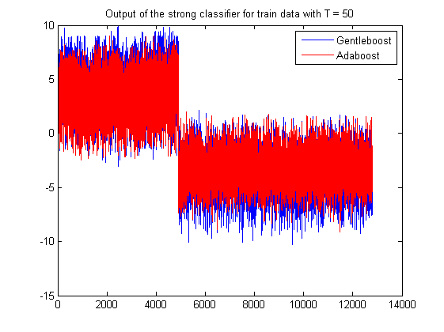 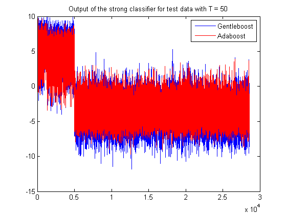 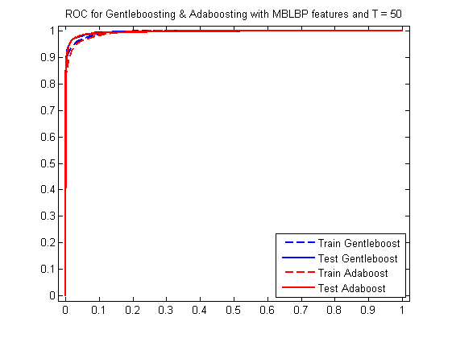
Sixth example : MLBP applied on Viola-Jones database
load viola_24x24
[Ny,Nx,P] = size(X);
N = 8;
scale = 2*[1 ; 1 ];
map = uint8(0:2^N-1);
F = mblbp_featlist(Ny , Nx , scale);
z = mblbp(X , F , map);
template = F(: , 1);
Nxx = (Nx-3*template(4) + 1);
Nyy = (Ny-3*template(5) + 1);
Xmlbp = zeros(Ny , Nx , P , class(z));
for i = 1:P
I = reshape(z(: , i) , [Nyy , Nxx]);
Xmlbp(: , : , i) = imresize(I , [Ny , Nx]);
end
figure
display_database(X);
title(sprintf('Original database (click zoom to see images)'));
figure
display_database(Xmlbp);
title(sprintf('MLBP''s features with scale %d (click zoom to see images)' , scale(1)));

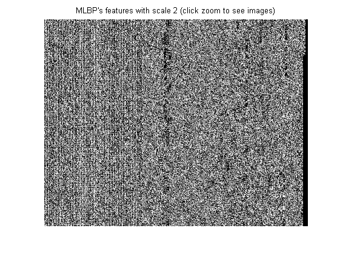
Seventh example : MLBP applied on Viola-Jones database
load viola_24x24
load model_detector_mblbp_24x24_4
bestFeat = model.param(1 , 1);
thresh = model.param(2 , 1);
[Ny,Nx,P] = size(X);
N = 8;
map = uint8(0:2^N-1);
F = mblbp_featlist(Ny , Nx);
z = mblbp(X , F(: , bestFeat) , map);
indpos = find(y==1);
indneg = find(y==-1);
figure
plot(indpos , z(indpos) , indneg , z(indneg) , 'r' , (1:length(z)) , thresh*ones(1,length(z)) , 'g')
legend('Faces' , 'Non-faces' , '\theta')
title(sprintf('Best MBLBPr Feature = %d' , bestFeat))
figure
[Nneg , Xneg] = hist(double(z(indneg)) , 100 , 'r' );
bar(Xneg , Nneg)
set(get(gca , 'children') , 'facecolor' , [1 0 1])
hold on
[Npos , Xpos] = hist(double(z(indpos)) , 100 );
bar(Xpos , Npos);
plot(thresh*ones(1,2) , [0 , max([Nneg , Npos])] , 'g' , 'linewidth' , 2)
hold off
legend(get(gca , 'children') , '\theta', 'Faces' , 'Non-faces' )
title(sprintf('Best MBLBP Feature = %d' , bestFeat))
disp('Press key to continue')
pause
Press key to continue
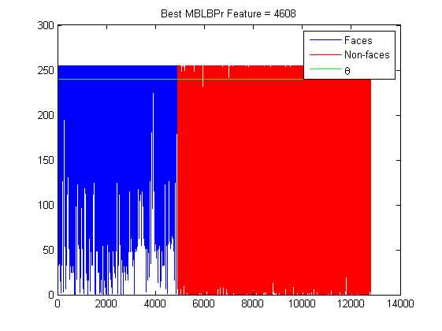 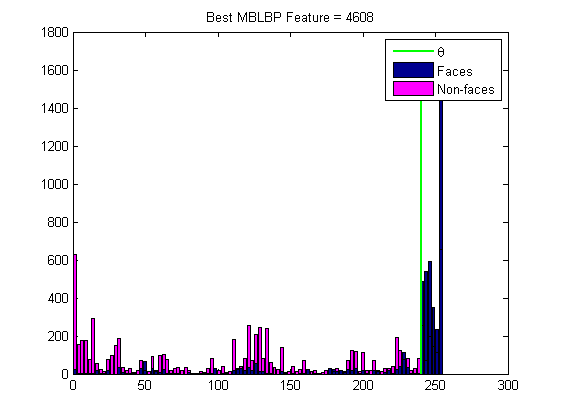
Eight example : Comparaison between full Strong classifier and cascade's
technics
load model_detector_mblbp_24x24_4
load jensen_24x24
T = size(model.param , 2);
cascade = [4 , 6 , 10 , 15 , 15 , 20 , 30 ; -1 , -0*75 , -0.5 , -0.25 , 0 , 0 , 0 ];
multiexit = [2 , 8 , 10 , 15 , 15 , 20 , 30 ; -0.5 , -0.25 , 0 , 0 , 0 , 0 , 0];
thresh = 0;
indp = find(y == 1);
indn = find(y ==-1);
model.cascade_type = 0;
tic,fx_cascade = eval_mblbp(X , model , cascade);,toc
yest = int8(sign(fx_cascade));
tp = sum(yest(indp) == y(indp))/length(indp)
fp = 1 - sum(yest(indn) == y(indn))/length(indn)
perf = sum(yest == y)/length(y)
[tpp1 , fpp1 ] = basicroc(y , fx_cascade);
model.cascade_type = 1;
tic,fx_multiexit = eval_mblbp(X , model , multiexit);,toc
yest = int8(sign(fx_multiexit));
tp = sum(yest(indp) == y(indp))/length(indp)
fp = 1 - sum(yest(indn) == y(indn))/length(indn)
perf = sum(yest == y)/length(y)
[tpp2 , fpp2 ] = basicroc(y , fx_multiexit);
tic,fx = eval_mblbp(X , model);,toc
yest = int8(sign(fx - thresh));
tp = sum(yest(indp) == y(indp))/length(indp)
fp = 1 - sum(yest(indn) == y(indn))/length(indn)
perf = sum(yest == y)/length(y)
[tpp3 , fpp3 ] = basicroc(y , fx);
figure
plot(1:length(y) , fx , 'r' , 1:length(y) , fx_cascade , 'b' , 1:length(y) , fx_multiexit , 'k')
figure
plot(fpp1 , tpp1 , fpp2 , tpp2 , 'k' , fpp3 , tpp3 , 'r' , 'linewidth' , 2)
axis([-0.02 , 1.02 , -0.02 , 1.02])
legend('Cascade' , 'MultiExit', 'Full', 'Location' , 'SouthEast')
title(sprintf('ROC for Gentleboosting with T = %d for different technics of cascading' , T))
Warning: Calling MEX-file 'C:\utilisateurs\SeBy\matlab\fdtool\eval_mblbp.dll'.
MEX-files with .dll extensions will not execute in a future version of MATLAB.
Elapsed time is 0.174121 seconds.
tp =
0.6296
fp =
8.0645e-004
perf =
0.9345
Elapsed time is 0.093149 seconds.
tp =
0.9302
fp =
0.0278
perf =
0.9648
Elapsed time is 0.337061 seconds.
tp =
0.9862
fp =
0.0270
perf =
0.9753
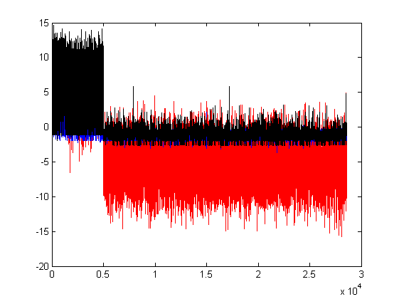 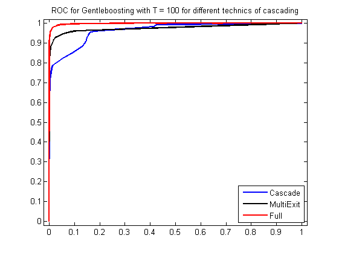